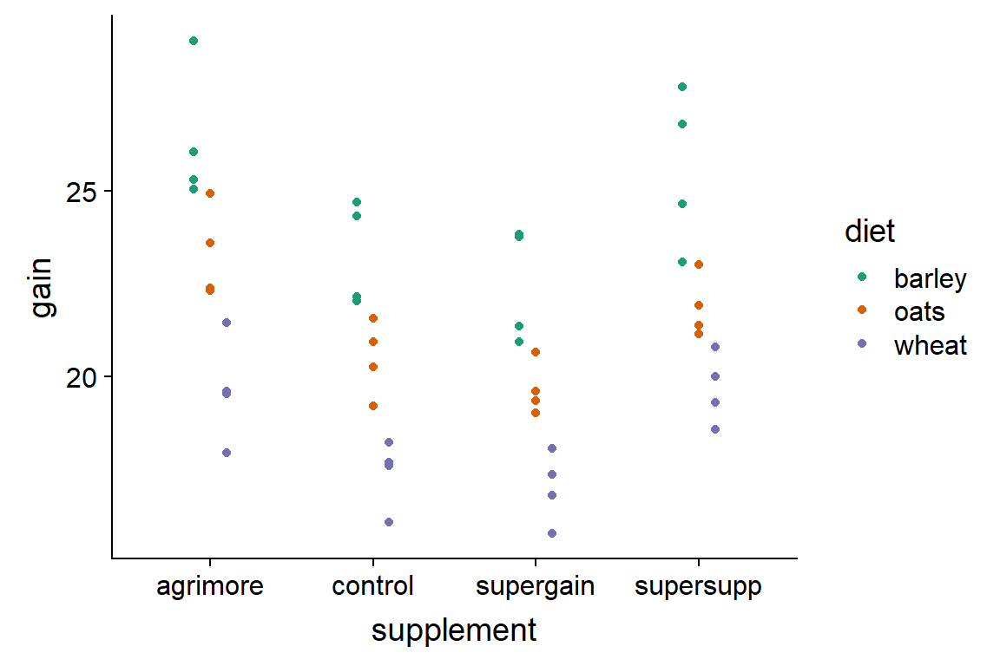
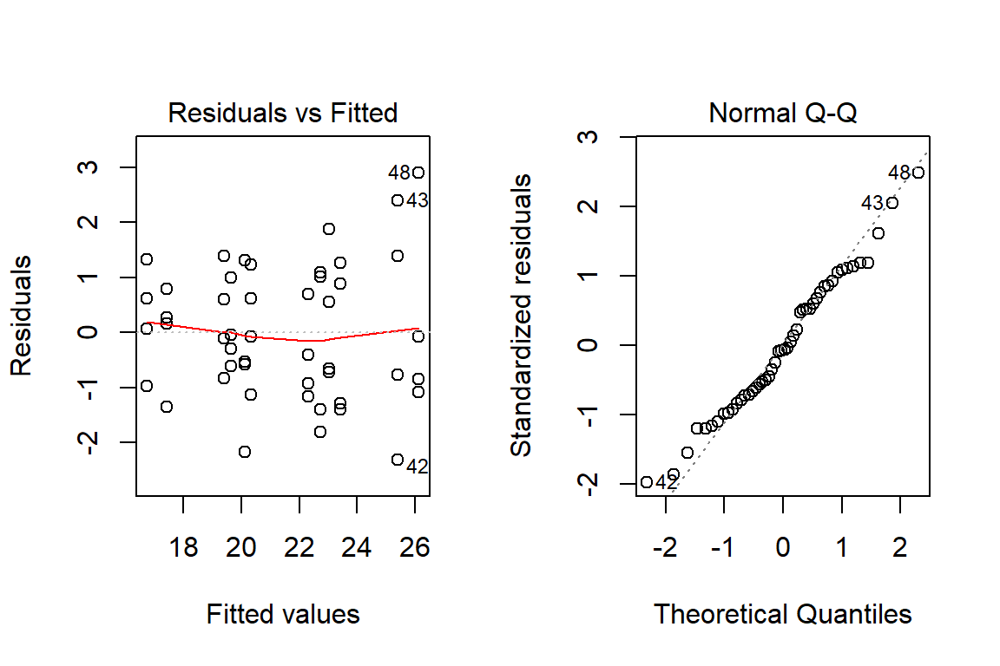
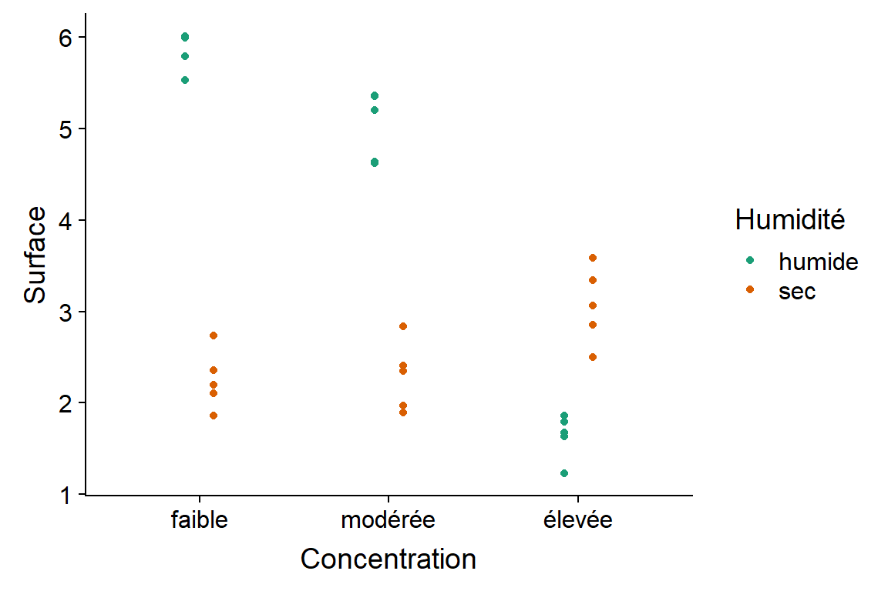
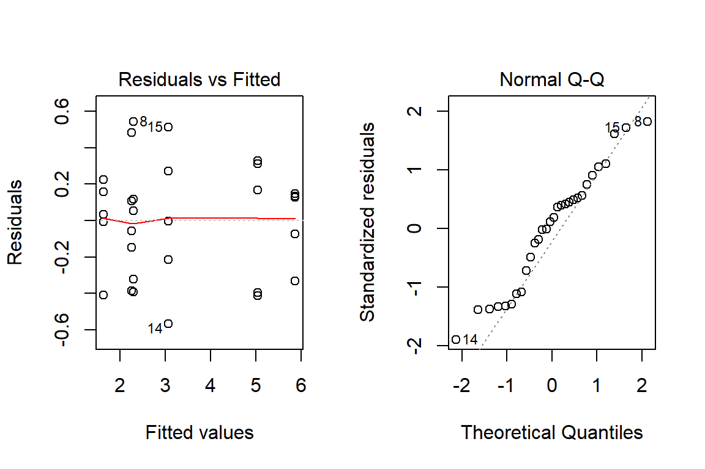
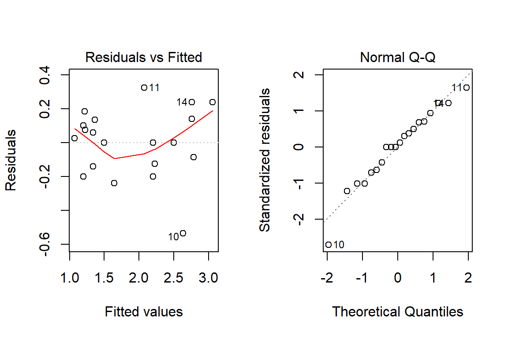

Effectuer une analyse de variance à deux facteurs (deux variables catégorielles).
Déterminer si deux facteurs ont des effets additifs ou une interaction.
Appliquer l’ANOVA à une expérience réalisée en blocs complets aléatoires.
Reformuler le modèle d’ANOVA comme modèle de régression linéaire en codant les variables catégorielles au moyen de contrastes.
\[ y_{ik} = \mu + \alpha_i + \epsilon_{ik} \]
\[ \epsilon_{ik} \sim N(0, \sigma) \]
Gain de poids de 48 animaux suivant trois types de régime avec quatre types de supplément. Quatre réplicats pour chacune des 12 combinaisons des deux facteurs.
growth <- read.csv("../donnees/growth.csv")
str(growth)## 'data.frame': 48 obs. of 3 variables:
## $ supplement: Factor w/ 4 levels "agrimore","control",..: 3 3 3 3 2 2 2 2 4 4 ...
## $ diet : Factor w/ 3 levels "barley","oats",..: 3 3 3 3 3 3 3 3 3 3 ...
## $ gain : num 17.4 16.8 18.1 15.8 17.7 ...
Dans ce modèle, les effets sont additifs. L’effet combiné d’un régime et d’un supplément est la somme des deux effets pris séparément.
\[ y_{ijk} = \mu + \alpha_i + \beta_j + \epsilon_{ijk} \]
Moyenne générale: \(\hat{\mu} = \bar{y}\)
Effet du traitement \(i\) du facteur A: \(\hat{\alpha_i} = \bar{y_i} - \bar{y}\)
Effet du traitement \(j\) du facteur B: \(\hat{\beta_j} = \bar{y_j} - \bar{y}\)
On a \(l\) traitements du facteur A, \(m\) traitements du facteur B et \(n\) réplicats pour chaque combinaison des traitements (\(lmn\) observations totales).
| Composante | Somme des carrés (SS) | Degrés de liberté (df) | Carré moyen (MS) |
|---|---|---|---|
| Facteur A | \(SSA = \sum_{i = 1}^l mn (\bar{y_i} - \bar{y})^2\) | \(l - 1\) | \(MSA = \frac{SSA}{l - 1}\) |
| Facteur B | \(SSB = \sum_{j = 1}^m ln (\bar{y_j} - \bar{y})^2\) | \(m - 1\) | \(MSB = \frac{SSB}{m - 1}\) |
| Résidu | \(SSE = \sum_{i = 1}^l \sum_{j = 1}^m \sum_{k = i}^n (y_{ijk} - \bar{y_i} - \bar{y_j} + \bar{y})^2\) | \(lmn - l - m + 1\) | \(MSE = \frac{SSE}{lmn - l - m + 1}\) |
| Total | \(SST = \sum_{i = 1}^l \sum_{j = 1}^m \sum_{k = i}^n (y_{ijk} - \bar{y})^2\) | \(lmn - 1\) |
On a \(l\) traitements du facteur A, \(m\) traitements du facteur B et \(n\) réplicats pour chaque combinaison des traitements (\(lmn\) observations totales).
| Composante | Somme des carrés (SS) | Degrés de liberté (df) | Carré moyen (MS) |
|---|---|---|---|
| Facteur A | \(SSA = \sum_{i = 1}^l mn (\bar{y_i} - \bar{y})^2\) | \(l - 1\) | \(MSA = \frac{SSA}{l - 1}\) |
| Facteur B | \(SSB = \sum_{j = 1}^m ln (\bar{y_j} - \bar{y})^2\) | \(m - 1\) | \(MSB = \frac{SSB}{m - 1}\) |
| Résidu | \(SSE = \sum_{i = 1}^l \sum_{j = 1}^m \sum_{k = i}^n (y_{ijk} - \bar{y_i} - \bar{y_j} + \bar{y})^2\) | \(lmn - l - m + 1\) | \(MSE = \frac{SSE}{lmn - l - m + 1}\) |
| Total | \(SST = \sum_{i = 1}^l \sum_{j = 1}^m \sum_{k = i}^n (y_{ijk} - \bar{y})^2\) | \(lmn - 1\) |
Dans R, un modèle à deux facteurs additifs est représenté par l’équation reponse ~ facteurA + facteurB.
aov_growth_add <- aov(gain ~ diet + supplement, data = growth)Vérifions d’abord les graphiques de diagnostic, puis les résultats sommaires de l’ANOVA.

summary(aov_growth_add)## Df Sum Sq Mean Sq F value Pr(>F)
## diet 2 287.17 143.59 92.36 4.20e-16 ***
## supplement 3 91.88 30.63 19.70 3.98e-08 ***
## Residuals 42 65.30 1.55
## ---
## Signif. codes: 0 '***' 0.001 '**' 0.01 '*' 0.05 '.' 0.1 ' ' 1TukeyHSD(aov_growth_add)## Tukey multiple comparisons of means
## 95% family-wise confidence level
##
## Fit: aov(formula = gain ~ diet + supplement, data = growth)
##
## $diet
## diff lwr upr p adj
## oats-barley -3.092817 -4.163817 -2.021817 0e+00
## wheat-barley -5.990298 -7.061298 -4.919297 0e+00
## wheat-oats -2.897481 -3.968481 -1.826481 2e-07
##
## $supplement
## diff lwr upr p adj
## control-agrimore -2.6967005 -4.0583332 -1.3350677 0.0000234
## supergain-agrimore -3.3814586 -4.7430914 -2.0198259 0.0000003
## supersupp-agrimore -0.7273521 -2.0889849 0.6342806 0.4888738
## supergain-control -0.6847581 -2.0463909 0.6768746 0.5400389
## supersupp-control 1.9693484 0.6077156 3.3309811 0.0020484
## supersupp-supergain 2.6541065 1.2924737 4.0157392 0.0000307Pour l’ANOVA à deux facteurs, on a la relation: \(SST = SSA + SSB + SSE\).
Ratios \(SSA/SST\) et \(SSB/SST\) sont les fractions de la variance totale de la réponse expliquées par le facteur A et le facteur B, respectivement.
Le ratio \(SSE/SST\) est la fraction de la variance inexpliquée par le modèle (erreur résiduelle).
Dans notre exemple, \(SST = 287.17 + 91.88 + 65.30 = 444.35\).
summary(aov_growth_add)## Df Sum Sq Mean Sq F value Pr(>F)
## diet 2 287.17 143.59 92.36 4.20e-16 ***
## supplement 3 91.88 30.63 19.70 3.98e-08 ***
## Residuals 42 65.30 1.55
## ---
## Signif. codes: 0 '***' 0.001 '**' 0.01 '*' 0.05 '.' 0.1 ' ' 1La fraction de la variance expliquée par les facteurs inclus dans le modèle est égale à:
\[ R^2 = 1 - \frac{SSE}{SST}\]
Quand on parle de l’effet d’un prédicteur ou de la fraction de la variance expliquée, cela ne signifie pas toujours qu’il existe une relation de cause à effet.
Surface bactérienne (en mm\(^2\)) en fonction de l’humidité et de la concentration d’antibiotique.
# fileEncoding = "UTF-8" permet de lire les accents correctement
antibiot <- read.csv("../donnees/antibiot.csv", fileEncoding = "UTF-8")
str(antibiot)## 'data.frame': 30 obs. of 3 variables:
## $ Surface : num 2.1 2.73 1.86 2.36 2.2 ...
## $ Humidité : Factor w/ 2 levels "humide","sec": 2 2 2 2 2 2 2 2 2 2 ...
## $ Concentration: Factor w/ 3 levels "élevée","faible",..: 2 2 2 2 2 3 3 3 3 3 ...Quand R importe un jeu de données avec read.csv, les colonnes non-numériques sont importées comme facteurs avec un ordre de catégories (ou de niveaux, levels) déterminé par l’ordre alphabétique.
levels(antibiot$Concentration)## [1] "élevée" "faible" "modérée"On peut spécifier un autre ordre avec la fonction factor.
antibiot$Concentration <- factor(antibiot$Concentration,
levels = c("faible", "modérée", "élevée"))
levels(antibiot$Concentration)## [1] "faible" "modérée" "élevée"Est-ce qu’un modèle avec des effets additifs de la concentration d’antibiotique et de l’humidité serait approprié ici?

Pour représenter l’interaction, on ajoute un terme \(\gamma_{ij}\) au modèle d’ANOVA.
\[ y_{ijk} = \mu + \alpha_i + \beta_j + \gamma_{ij} + \epsilon_{ijk} \]
\[ \hat{\gamma_{ij}} = (\bar{y_{ij}} - \bar{y}) - (\bar{y_i} - \bar{y}) - (\bar{y_j} - \bar{y}) \]
En simplifiant: \[ \hat{\gamma_{ij}} = \bar{y_{ij}} - \bar{y_i} - \bar{y_j} + \bar{y} \]
Dans cette équation, \(\bar{y_{ij}}\) est la moyenne des observations qui font partie à la fois du groupe \(i\) du facteur A et du groupe \(j\) du facteur B.
Le résidu du modèle pour une observation \(y_{ijk}\) est égal à \(y_{ijk} - \bar{y_{ij}}\).
| Composante | Somme des carrés (SS) | Degrés de liberté (df) | Carré moyen (MS) |
|---|---|---|---|
| Facteur A | \(SSA = \sum_{i = 1}^l mn (\bar{y_i} - \bar{y})^2\) | \(l - 1\) | \(MSA = \frac{SSA}{l - 1}\) |
| Facteur B | \(SSB = \sum_{j = 1}^m ln (\bar{y_j} - \bar{y})^2\) | \(m - 1\) | \(MSB = \frac{SSB}{m - 1}\) |
| Interaction AB | \(SSI = \sum_{i = 1}^l \sum_{j = 1}^m n (\bar{y_{ij}} - \bar{y_i} - \bar{y_j} + \bar{y})^2\) | \((l - 1)(m - 1)\) | \(MSI = \frac{SSI}{(l-1)(m-1)}\) |
| Résidu | \(SSE = \sum_{i = 1}^l \sum_{j = 1}^m \sum_{k = i}^n (y_{ijk} - \bar{y_{ij}})^2\) | \(lm(n - 1)\) | \(MSE = \frac{SSE}{lm(n-1)}\) |
| Total | \(SST = \sum_{i = 1}^l \sum_{j = 1}^m \sum_{k = i}^n (y_{ijk} - \bar{y})^2\) | \(lmn - 1\) |
En R, pour spécifier une interaction dans la formule du modèle, on place un symbole de multiplication * entre les deux variables au lieu du +.
aov_antibio <- aov(Surface ~ Concentration * Humidité, antibiot)
summary(aov_antibio)## Df Sum Sq Mean Sq F value Pr(>F)
## Concentration 2 15.93 7.965 71.5 7.76e-11 ***
## Humidité 1 20.23 20.228 181.6 1.09e-12 ***
## Concentration:Humidité 2 36.40 18.199 163.4 1.05e-14 ***
## Residuals 24 2.67 0.111
## ---
## Signif. codes: 0 '***' 0.001 '**' 0.01 '*' 0.05 '.' 0.1 ' ' 1Avec 6 groupes, il y a 15 comparaisons possibles pour l’interaction.
TukeyHSD(aov_antibio)## Tukey multiple comparisons of means
## 95% family-wise confidence level
##
## Fit: aov(formula = Surface ~ Concentration * Humidité, data = antibiot)
##
## $Concentration
## diff lwr upr p adj
## modérée-faible -0.3939894 -0.7667378 -0.02124113 0.0368807
## élevée-faible -1.7046765 -2.0774249 -1.33192823 0.0000000
## élevée-modérée -1.3106871 -1.6834354 -0.93793878 0.0000000
##
## $Humidité
## diff lwr upr p adj
## sec-humide -1.642264 -1.893794 -1.390734 0
##
## $`Concentration:Humidité`
## diff lwr upr p adj
## modérée:humide-faible:humide -0.82921989 -1.481887432 -0.1765523 0.0073592
## élevée:humide-faible:humide -4.22827694 -4.880944489 -3.5756094 0.0000000
## faible:sec-faible:humide -3.61481768 -4.267485222 -2.9621501 0.0000000
## modérée:sec-faible:humide -3.57357668 -4.226244229 -2.9209091 0.0000000
## élevée:sec-faible:humide -2.79589383 -3.448561371 -2.1432263 0.0000000
## élevée:humide-modérée:humide -3.39905706 -4.051724600 -2.7463895 0.0000000
## faible:sec-modérée:humide -2.78559779 -3.438265333 -2.1329302 0.0000000
## modérée:sec-modérée:humide -2.74435680 -3.397024340 -2.0916893 0.0000000
## élevée:sec-modérée:humide -1.96667394 -2.619341482 -1.3140064 0.0000000
## faible:sec-élevée:humide 0.61345927 -0.039208277 1.2661268 0.0740073
## modérée:sec-élevée:humide 0.65470026 0.002032716 1.3073678 0.0489732
## élevée:sec-élevée:humide 1.43238312 0.779715574 2.0850507 0.0000070
## modérée:sec-faible:sec 0.04124099 -0.611426550 0.6939085 0.9999549
## élevée:sec-faible:sec 0.81892385 0.166256308 1.4715914 0.0082690
## élevée:sec-modérée:sec 0.77768286 0.125015314 1.4303504 0.0131278Dans le cas du jeu de données sur la croissance animale growth, l’interaction n’est pas significative:
aov_growth_inter <- aov(gain ~ diet * supplement, growth)
summary(aov_growth_inter)## Df Sum Sq Mean Sq F value Pr(>F)
## diet 2 287.17 143.59 83.52 3.00e-14 ***
## supplement 3 91.88 30.63 17.82 2.95e-07 ***
## diet:supplement 6 3.41 0.57 0.33 0.917
## Residuals 36 61.89 1.72
## ---
## Signif. codes: 0 '***' 0.001 '**' 0.01 '*' 0.05 '.' 0.1 ' ' 1Principal désavantage du modèle avec interaction: il faut estimer plus de paramètres.
Il est impossible d’estimer l’interaction s’il n’y a qu’une observation pour chaque combinaison de facteurs.
Blocs complets aléatoires: les unités d’observation sont divisées en blocs, les traitements sont assignés aléatoirement dans chaque bloc.
Ce type de plan est avantageux lorsque les conditions dans chaque bloc sont plus homogènes qu’entre les blocs.
Équivalent d’une expérience à échantillons appariés pour plus de deux traitements.
Expérience mesurant le poids de cobayes selon quatre régimes. Vingt individus divisés en cinq blocs (ex.: cinq portées).
pigs <- read.csv("../donnees/pigs.csv")
str(pigs)## 'data.frame': 20 obs. of 3 variables:
## $ Block : int 1 1 1 1 2 2 2 2 3 3 ...
## $ Diet : int 1 2 3 4 1 2 3 4 1 2 ...
## $ Weight: num 1.5 2.7 2.1 1.3 1.4 2.9 2.2 1 1.4 2.1 ...Block et Diet sont des variables catégorielles même si elles sont représentées par des nombres. Il faut donc convertir ces variables en facteurs.
pigs <- mutate(pigs, Block = as.factor(Block), Diet = as.factor(Diet))Même modèle qu’ANOVA à deux facteurs sans interaction. (On suppose que les effets du bloc et du des traitements sont additifs).
aov_pigs <- aov(Weight ~ Diet + Block, data = pigs)
summary(aov_pigs)## Df Sum Sq Mean Sq F value Pr(>F)
## Diet 3 8.154 2.7178 41.866 1.24e-06 ***
## Block 4 0.393 0.0982 1.513 0.26
## Residuals 12 0.779 0.0649
## ---
## Signif. codes: 0 '***' 0.001 '**' 0.01 '*' 0.05 '.' 0.1 ' ' 1L’interprétation du modèle est différente que pour l’ANOVA à deux facteurs.
Les blocs ne sont pas un prédicteur, mais servent à réduire la variance résiduelle pour faciliter la détection d’effets des traitements (ici, les régimes).
Dans le modèle présenté ici, les effet des blocs sont fixes. Ils sont estimés séparément pour chaque bloc.
On pourrait aussi modéliser des observations groupées en terme d’une distribution des effets de blocs. Il s’agirait alors d’effets aléatoires.
Les effets aléatoires feront partie des modèles mixtes que nous verrons plus tard dans la session.
lm au lieu de aov dans R.lm_growth_supp <- lm(gain ~ supplement, data = growth)Le tableau de résultats pour lm met davantage l’accent sur l’estimation des effets (dans la section Coefficients).
summary(lm_growth_supp)##
## Call:
## lm(formula = gain ~ supplement, data = growth)
##
## Residuals:
## Min 1Q Median 3Q Max
## -5.1309 -2.2142 -0.2459 1.7644 5.9339
##
## Coefficients:
## Estimate Std. Error t value Pr(>|t|)
## (Intercept) 23.0953 0.8170 28.267 < 2e-16 ***
## supplementcontrol -2.6967 1.1555 -2.334 0.02423 *
## supplementsupergain -3.3815 1.1555 -2.926 0.00541 **
## supplementsupersupp -0.7274 1.1555 -0.629 0.53228
## ---
## Signif. codes: 0 '***' 0.001 '**' 0.01 '*' 0.05 '.' 0.1 ' ' 1
##
## Residual standard error: 2.83 on 44 degrees of freedom
## Multiple R-squared: 0.2068, Adjusted R-squared: 0.1527
## F-statistic: 3.823 on 3 and 44 DF, p-value: 0.01614##
## Call:
## lm(formula = gain ~ supplement, data = growth)
##
## Residuals:
## Min 1Q Median 3Q Max
## -5.1309 -2.2142 -0.2459 1.7644 5.9339
##
## Coefficients:
## Estimate Std. Error t value Pr(>|t|)
## (Intercept) 23.0953 0.8170 28.267 < 2e-16 ***
## supplementcontrol -2.6967 1.1555 -2.334 0.02423 *
## supplementsupergain -3.3815 1.1555 -2.926 0.00541 **
## supplementsupersupp -0.7274 1.1555 -0.629 0.53228
## ---
## Signif. codes: 0 '***' 0.001 '**' 0.01 '*' 0.05 '.' 0.1 ' ' 1
##
## Residual standard error: 2.83 on 44 degrees of freedom
## Multiple R-squared: 0.2068, Adjusted R-squared: 0.1527
## F-statistic: 3.823 on 3 and 44 DF, p-value: 0.01614##
## Call:
## lm(formula = gain ~ supplement, data = growth)
##
## Residuals:
## Min 1Q Median 3Q Max
## -5.1309 -2.2142 -0.2459 1.7644 5.9339
##
## Coefficients:
## Estimate Std. Error t value Pr(>|t|)
## (Intercept) 23.0953 0.8170 28.267 < 2e-16 ***
## supplementcontrol -2.6967 1.1555 -2.334 0.02423 *
## supplementsupergain -3.3815 1.1555 -2.926 0.00541 **
## supplementsupersupp -0.7274 1.1555 -0.629 0.53228
## ---
## Signif. codes: 0 '***' 0.001 '**' 0.01 '*' 0.05 '.' 0.1 ' ' 1
##
## Residual standard error: 2.83 on 44 degrees of freedom
## Multiple R-squared: 0.2068, Adjusted R-squared: 0.1527
## F-statistic: 3.823 on 3 and 44 DF, p-value: 0.01614On peut retrouver le tableau d’ANOVA avec la fonction anova appliquée au résultat de lm.
anova(lm_growth_supp)## Analysis of Variance Table
##
## Response: gain
## Df Sum Sq Mean Sq F value Pr(>F)
## supplement 3 91.88 30.6270 3.8233 0.01614 *
## Residuals 44 352.47 8.0106
## ---
## Signif. codes: 0 '***' 0.001 '**' 0.01 '*' 0.05 '.' 0.1 ' ' 1summary(lm_growth_supp)##
## Call:
## lm(formula = gain ~ supplement, data = growth)
##
## Residuals:
## Min 1Q Median 3Q Max
## -5.1309 -2.2142 -0.2459 1.7644 5.9339
##
## Coefficients:
## Estimate Std. Error t value Pr(>|t|)
## (Intercept) 23.0953 0.8170 28.267 < 2e-16 ***
## supplementcontrol -2.6967 1.1555 -2.334 0.02423 *
## supplementsupergain -3.3815 1.1555 -2.926 0.00541 **
## supplementsupersupp -0.7274 1.1555 -0.629 0.53228
## ---
## Signif. codes: 0 '***' 0.001 '**' 0.01 '*' 0.05 '.' 0.1 ' ' 1
##
## Residual standard error: 2.83 on 44 degrees of freedom
## Multiple R-squared: 0.2068, Adjusted R-squared: 0.1527
## F-statistic: 3.823 on 3 and 44 DF, p-value: 0.01614Modèle avec un prédicteur numérique \(x\) et une réponse numérique \(y\).
\[ y = \beta_0 + \beta_1 x + \epsilon \]
Imaginons une expérience avec un groupe témoin et deux traitements. Créons deux variables numériques:
Nous obtenons donc le modèle:
\[y = \beta_0 + \beta_1 T_1 + \beta_2 T_2 + \epsilon\]
L’ordonnée à l’origine est égale à la moyenne du groupe témoin.
Les autres coefficients représentent la différence entre chaque traitement et le groupe témoin.
C’est le codage utilisé par défaut dans R.
En statistiques, un contraste est une variable numérique définie à partir d’un variable catégorielle (ou facteur) qui représente une comparaison entre catégories.
Pour un facteur avec \(k\) catégories, on peut définir \(k - 1\) contrastes indépendants.
Dans R, la fonction contrasts affiche la matrice des contrastes associés à un facteur.
contrasts(growth$supplement)## control supergain supersupp
## agrimore 0 0 0
## control 1 0 0
## supergain 0 1 0
## supersupp 0 0 1Les colonnes de cette matrice correspondent aux contrastes.
Le premier traitement agrimore a une valeur de 0 pour chaque contraste.
On peut changer le groupe de référence avec la fonction relevel.
growth$supplement <- relevel(growth$supplement, ref = "control")
contrasts(growth$supplement)## agrimore supergain supersupp
## control 0 0 0
## agrimore 1 0 0
## supergain 0 1 0
## supersupp 0 0 1Les coefficients indiquent maintenant la différence avec le groupe témoin. Le test \(F\) et le \(R^2\) ne changent pas.
lm_growth_supp <- lm(gain ~ supplement, data = growth)
summary(lm_growth_supp)##
## Call:
## lm(formula = gain ~ supplement, data = growth)
##
## Residuals:
## Min 1Q Median 3Q Max
## -5.1309 -2.2142 -0.2459 1.7644 5.9339
##
## Coefficients:
## Estimate Std. Error t value Pr(>|t|)
## (Intercept) 20.3986 0.8170 24.967 <2e-16 ***
## supplementagrimore 2.6967 1.1555 2.334 0.0242 *
## supplementsupergain -0.6848 1.1555 -0.593 0.5565
## supplementsupersupp 1.9693 1.1555 1.704 0.0954 .
## ---
## Signif. codes: 0 '***' 0.001 '**' 0.01 '*' 0.05 '.' 0.1 ' ' 1
##
## Residual standard error: 2.83 on 44 degrees of freedom
## Multiple R-squared: 0.2068, Adjusted R-squared: 0.1527
## F-statistic: 3.823 on 3 and 44 DF, p-value: 0.01614lm_growth <- lm(gain ~ diet + supplement, data = growth)
summary(lm_growth)##
## Call:
## lm(formula = gain ~ diet + supplement, data = growth)
##
## Residuals:
## Min 1Q Median 3Q Max
## -2.30792 -0.85929 -0.07713 0.92052 2.90615
##
## Coefficients:
## Estimate Std. Error t value Pr(>|t|)
## (Intercept) 23.4263 0.4408 53.141 < 2e-16 ***
## dietoats -3.0928 0.4408 -7.016 1.38e-08 ***
## dietwheat -5.9903 0.4408 -13.589 < 2e-16 ***
## supplementagrimore 2.6967 0.5090 5.298 4.03e-06 ***
## supplementsupergain -0.6848 0.5090 -1.345 0.185772
## supplementsupersupp 1.9693 0.5090 3.869 0.000375 ***
## ---
## Signif. codes: 0 '***' 0.001 '**' 0.01 '*' 0.05 '.' 0.1 ' ' 1
##
## Residual standard error: 1.247 on 42 degrees of freedom
## Multiple R-squared: 0.8531, Adjusted R-squared: 0.8356
## F-statistic: 48.76 on 5 and 42 DF, p-value: < 2.2e-16Voici les contrastes pour le facteur diet:
contrasts(growth$diet)## oats wheat
## barley 0 0
## oats 1 0
## wheat 0 1Intercept a-t-il changé entre les deux tableaux (était 20.4 dans le modèle à un faceur)?contr.treatment).contr.sum) pour le régime.contrasts(growth$diet) <- "contr.sum"
contrasts(growth$diet)## [,1] [,2]
## barley 1 0
## oats 0 1
## wheat -1 -1Chaque contraste prend la valeur de 1 pour une des catégories, sauf la dernière catégorie qui prend une valeur de -1 pour tous les contrastes.
La somme de chaque colonne est zéro, donc la moyenne de chaque contraste sur l’ensemble des catégories est zéro.
Dans le modèle de régression: \(y = \beta_0 + \beta_1 T_1 + \beta_2 T_2\) avec codage d’effet:
Catégorie 1 (\(T_1 = 1, T_2 = 0\)): \(\mu_1 = \beta_0 + \beta_1\)
Catégorie 2 (\(T_1 = 0, T_2 = 1\)): \(\mu_2 = \beta_0 + \beta_2\)
Catégorie 3 (\(T_1 = -1, T_2 = -1\)): \(\mu_3 = \beta_0 - \beta_1 - \beta_2\)
Moyenne générale: \(\mu = (\mu_1 + \mu_2 + \mu_3)/3 = \beta_0\)
L’ordonnée à l’origine donne à la moyenne générale.
Les autres coefficients donnent la différence entre la moyenne de la catégorie et la moyenne générale.
L’effet de la dernière catégorie est l’opposé de la somme des autres effets, donc \(-(\beta_1 + \beta_2)\) ici.
lm_growth <- lm(gain ~ diet + supplement, data = growth)
summary(lm_growth)##
## Call:
## lm(formula = gain ~ diet + supplement, data = growth)
##
## Residuals:
## Min 1Q Median 3Q Max
## -2.30792 -0.85929 -0.07713 0.92052 2.90615
##
## Coefficients:
## Estimate Std. Error t value Pr(>|t|)
## (Intercept) 20.39861 0.35994 56.673 < 2e-16 ***
## diet1 3.02770 0.25451 11.896 4.93e-15 ***
## diet2 -0.06511 0.25451 -0.256 0.799333
## supplementagrimore 2.69670 0.50903 5.298 4.03e-06 ***
## supplementsupergain -0.68476 0.50903 -1.345 0.185772
## supplementsupersupp 1.96935 0.50903 3.869 0.000375 ***
## ---
## Signif. codes: 0 '***' 0.001 '**' 0.01 '*' 0.05 '.' 0.1 ' ' 1
##
## Residual standard error: 1.247 on 42 degrees of freedom
## Multiple R-squared: 0.8531, Adjusted R-squared: 0.8356
## F-statistic: 48.76 on 5 and 42 DF, p-value: < 2.2e-16Que signifient les coefficients dans ce tableau? Quel est l’effet du troisième régime (wheat)?
On peut utiliser différents codages pour différents facteurs dans la même régression.
Le codage de traitement (défaut) est utile pour comparer les catégories à une catégorie de référence.
Le codage d’effet (contr.sum) est utile pour comparer le catégories à la réponse moyenne.
Si les deux facteurs avaient un codage d’effet, l’ordonnée à l’origine serait égale à la moyenne générale (tous les régimes et suppléments).
L’ANOVA à deux facteurs permet d’évaluer l’effet de deux variables catégorielles (ex.: deux types de traitement) et de déterminer si ces effets sont additifs ou s’il y a une interaction.
Une expérience à blocs complets aléatoires s’analyse comme une ANOVA à deux facteurs sans interaction. La division en blocs permet de contrôler une partie de la variation pour mieux estimer l’effet des traitements.
Le modèle d’ANOVA est un exemple de régression linéaire. Les variables catégorielles sont représentées dans un modèle de régression au moyen de contrastes.
Nous avons vu deux des types de contrastes possibles dans R: le codage de traitement (option par défaut) compare l’effet de chaque catégorie à une catégorie de référence, tandis que le codage d’effet compare l’effet de chaque catégorie à la moyenne de toutes les catégories.